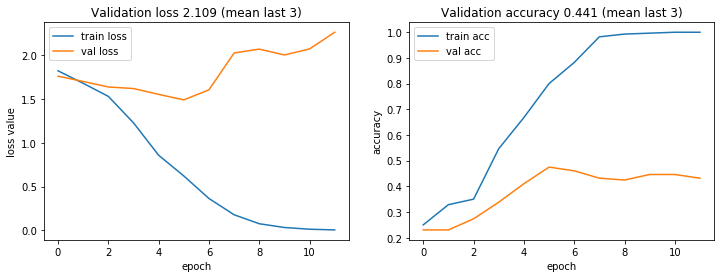
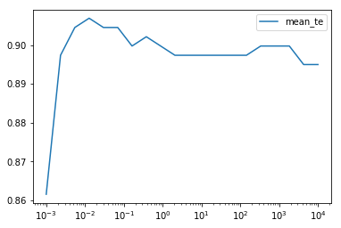

import tensorflow as tf
import tensorflow_hub as hubImages classifier using deep learning and machine learning models
The goal of this project was to build different images classifier. I worked with the Swissroads data set which contains thousands images of vehicles found including cars, trucks, vans, bikes, motorcycles and others.
The ultimate goal is to test different classifiers and techniques and choose the best method.
2. Data exploration
- Plot a few images from each category
For this task, I plot two images for each of the 6 categories: bike, car, motorcycle, other, truck and van.
import PIL.Image as Image
import numpy as np
bike1 = Image.open('swissroads/test/bike/bike-0100.png')
bike1bike2 = Image.open('swissroads/test/bike/bike-0101.png')
bike2car1 = Image.open('swissroads/test/car/car-0097.png')
car1
car2 = Image.open('swissroads/test/car/car-0098.png')
car2motorcycle1 = Image.open('swissroads/test/motorcycle/motorcycle-0077.png')
motorcycle1motorcycle2 = Image.open('swissroads/test/motorcycle/motorcycle-0078.png')
motorcycle2other1 = Image.open('swissroads/test/other/other-0049.png')
other1other2 = Image.open('swissroads/test/other/other-0050.png')
other2
truck1 = Image.open('swissroads/test/truck/truck-0064.png')
truck1truck2= Image.open('swissroads/test/truck/truck-0065.png')
truck2van1 = Image.open('swissroads/test/van/van-0038.png')
van1
van2 = Image.open('swissroads/test/van/van-0039.png')
van2
- Make a scree plot, how many PCA components explain 10%, 20%, …, 90% and 100% of the variance?
First, I load the different elements of the train set.
with np.load('trainset.npz', allow_pickle=False) as npz_file:
X = npz_file['train_feature']
Y = npz_file['train_label']
names = npz_file['train_name']Then I apply the PCA transformer.
from sklearn.preprocessing import StandardScaler
from sklearn.decomposition import PCA
pca3 = PCA(n_components=None)
pca3.fit(X)
pve = pca3.explained_variance_ratio_And I compute the cumulative sum.
sumpve = np.cumsum(pve)
sumpvearray([0.1344936 , 0.2087489 , 0.2799862 , 0.31217173, 0.33760956,
0.3583333 , 0.377379 , 0.3941875 , 0.40971527, 0.4247254 ,
0.43830603, 0.4505505 , 0.46202305, 0.4730017 , 0.48389196,
0.4941155 , 0.50366163, 0.51275325, 0.5213581 , 0.5296294 ,
0.53732485, 0.5449765 , 0.55249184, 0.5598207 , 0.5669916 ,
0.5740723 , 0.580814 , 0.58740735, 0.59383476, 0.600106 ,
0.6061526 , 0.6121337 , 0.61808836, 0.62399113, 0.62979263,
0.6354872 , 0.6409344 , 0.64629495, 0.65137005, 0.6563524 ,
0.6611421 , 0.665837 , 0.67046773, 0.6750259 , 0.67948896,
0.68384 , 0.68816215, 0.69243425, 0.6966555 , 0.70074064,
0.7048151 , 0.7088197 , 0.7126935 , 0.7165307 , 0.7203316 ,
0.7240459 , 0.72764814, 0.73117197, 0.7346603 , 0.738116 ,
0.7415551 , 0.7449048 , 0.74818265, 0.7514316 , 0.75464255,
0.7578165 , 0.76097137, 0.7641028 , 0.7670954 , 0.770061 ,
0.7730154 , 0.77593666, 0.7788439 , 0.78169763, 0.78454155,
0.78733283, 0.79009765, 0.79281014, 0.7954061 , 0.7979701 ,
0.8005114 , 0.8030465 , 0.805536 , 0.80797756, 0.8103965 ,
0.8127681 , 0.81513125, 0.8174775 , 0.8197751 , 0.8220363 ,
0.8242911 , 0.82650936, 0.8286814 , 0.8308453 , 0.83299565,
0.835124 , 0.8372309 , 0.8393252 , 0.84137243, 0.84337884,
0.8453535 , 0.84732413, 0.8492778 , 0.8512061 , 0.85310227,
0.85497504, 0.85683876, 0.85869616, 0.8604995 , 0.8622945 ,
0.8640699 , 0.86583835, 0.8675804 , 0.8693112 , 0.8710044 ,
0.8726823 , 0.8743508 , 0.8759999 , 0.87763053, 0.87923443,
0.8808169 , 0.882386 , 0.88394123, 0.8854769 , 0.8870015 ,
0.8884885 , 0.8899591 , 0.8914156 , 0.8928605 , 0.89429235,
0.89570874, 0.8971153 , 0.8985121 , 0.8999 , 0.9012585 ,
0.90258634, 0.90389186, 0.9051934 , 0.9064794 , 0.90774477,
0.9090051 , 0.9102497 , 0.911492 , 0.91272146, 0.9139403 ,
0.91514087, 0.9163284 , 0.91749656, 0.9186646 , 0.91982037,
0.92095804, 0.92208314, 0.92319673, 0.92429626, 0.9253844 ,
0.92646194, 0.92752826, 0.9285914 , 0.92964846, 0.9306856 ,
0.93171144, 0.93272966, 0.9337378 , 0.9347365 , 0.9357302 ,
0.936715 , 0.9376876 , 0.9386499 , 0.9395963 , 0.9405348 ,
0.94146496, 0.94238806, 0.9433005 , 0.94420344, 0.9451 ,
0.94598716, 0.946868 , 0.9477421 , 0.94860727, 0.94945776,
0.9502957 , 0.9511272 , 0.951952 , 0.95276606, 0.9535655 ,
0.95436054, 0.9551487 , 0.9559321 , 0.95670617, 0.95747715,
0.9582351 , 0.9589877 , 0.9597309 , 0.9604704 , 0.961201 ,
0.96192163, 0.9626343 , 0.96333694, 0.9640375 , 0.9647304 ,
0.9654158 , 0.96609175, 0.96676433, 0.96743315, 0.968094 ,
0.9687449 , 0.96938056, 0.97001123, 0.9706379 , 0.97126275,
0.97188425, 0.9724932 , 0.9730992 , 0.9736906 , 0.97427183,
0.97484964, 0.9754159 , 0.97597986, 0.9765347 , 0.97708565,
0.9776333 , 0.97817403, 0.97870815, 0.97923785, 0.979764 ,
0.98028374, 0.98080057, 0.9813143 , 0.98181945, 0.982322 ,
0.98280835, 0.9832896 , 0.98376817, 0.9842444 , 0.98471665,
0.9851765 , 0.98563117, 0.9860849 , 0.9865305 , 0.98697007,
0.9874059 , 0.9878333 , 0.9882546 , 0.9886743 , 0.98909026,
0.98949885, 0.98989886, 0.99029535, 0.9906846 , 0.991068 ,
0.9914451 , 0.99181914, 0.9921912 , 0.9925563 , 0.9929159 ,
0.993274 , 0.99362445, 0.9939673 , 0.9943079 , 0.99464387,
0.99497235, 0.9952983 , 0.99561816, 0.9959284 , 0.99623525,
0.99654055, 0.9968375 , 0.99713254, 0.9974232 , 0.9977091 ,
0.9979863 , 0.998261 , 0.9985314 , 0.99879605, 0.99905246,
0.9992982 , 0.99954075, 0.9997777 , 1.0000001 , 1.0000001 ],
dtype=float32)I compute how many principal components I need to explain 5%, 10%, 15%, 20%, etc. of variance.
rank = []
for i in np.arange(0.05,1,0.05):
j=0
while sumpve[j] < i:
j = 1 + j
rank.append(j)
rank[0, 0, 1, 1, 2, 3, 5, 8, 11, 16, 22, 29, 38, 49, 63, 80, 103, 134, 180]Therefore, we need: - 1 component to get 10% of the variance - 2 components to get 20% - 4 components to get 30% - 9 components to get 40% - 17 components to get 50% - 30 components to get 60% - 50 components to get 70% - 81 components to get 80% - 135 components to get 90%
We can verify that on the folowwing scree plot:
%matplotlib inline
import matplotlib.pyplot as plt
plt.figure(figsize=(20,10))
xcor = np.arange(0, 250,10)
plt.plot(xcor, pve[xcor])
plt.xticks(xcor)
pve_cumsum = np.cumsum(pve)
plt.step(
xcor+0.5,
sumpve[xcor],
label='cumulative'
,color='red'
)
plt.xlabel('principal component')
plt.ylabel('proportion of variance explained')
plt.legend()
plt.show()- Visualize the features on a 2d-plot with PCA using the first two components. What can you say about the results?
I apply the transformer with only 2 components this time.
pca2 = PCA(n_components=2)
X_2d = pca2.fit_transform(X)And I plot the two components and use a different color for each of the 6 categories in order to see if we can already distinguish clusters.
fig = plt.figure()
for kind in [0,1, 2, 3,4,5]:
idx = (Y == kind)
plt.scatter(
X_2d[idx, 0], X_2d[idx, 1],
label= names[kind]
)
plt.legend(loc='best')
plt.xlabel('1st component')
plt.ylabel('2nd component')
plt.show()We can already see some clear clusters with only the fist two components, like the bike and motorcycle clusters.
Source: 2. Data exploration3. Visual search with k-NN
- Fit and tune a k-NN classifier
Again, I load the train set, validation set and test set.
import numpy as np
with np.load('trainset.npz', allow_pickle=False) as npz_file:
X_tr = npz_file['train_feature']
Y_tr = npz_file['train_label']
names_tr = npz_file['train_name']
images_tr = npz_file['train_image']
with np.load('validset.npz', allow_pickle=False) as npz_file:
X_val = npz_file['valid_feature']
Y_val = npz_file['valid_label']
names_val = npz_file['valid_name']
images_val = npz_file['valid_image']
with np.load('testset.npz', allow_pickle=False) as npz_file:
X_te = npz_file['test_feature']
Y_te = npz_file['test_label']
names_te = npz_file['test_name']
images_te = npz_file['test_image']I fit the KNClassifier. I test for n=5.
from sklearn.neighbors import KNeighborsClassifier
from sklearn.preprocessing import StandardScaler
from sklearn.pipeline import Pipeline
knn_pipe = Pipeline([
('knn', KNeighborsClassifier(n_neighbors=5))
])
knn_pipe.fit(X_tr, Y_tr)
accuracy = knn_pipe.score(X_val, Y_val)
print('Accuracy: {:.3f}'.format(accuracy))Accuracy: 0.892I generate the different k values in order to tune the model.
k_values = np.r_[1, np.arange(5, 101, step=1)]I apply the grid search to find the optimal k.
import pandas as pd
gs_results = []
for k in k_values:
knn_pipe.set_params(knn__n_neighbors=k)
knn_pipe.fit(X_tr, Y_tr)
gs_results.append({
'k': k,
'train_accuracy': knn_pipe.score(X_tr, Y_tr),
'valid_accuracy': knn_pipe.score(X_val, Y_val)
})
gs_results = pd.DataFrame(gs_results)
gs_results.sort_values(by='valid_accuracy', ascending=False).head()| k | train_accuracy | valid_accuracy | |
|---|---|---|---|
| 2 | 6 | 0.892857 | 0.899281 |
| 0 | 1 | 1.000000 | 0.892086 |
| 3 | 7 | 0.907143 | 0.892086 |
| 4 | 8 | 0.889286 | 0.892086 |
| 5 | 9 | 0.900000 | 0.892086 |
The best valid accuracy is obtain with k=6. I plot the curves.
%matplotlib inline
import matplotlib.pyplot as plt
plt.plot(gs_results['k'], gs_results['train_accuracy'], label='train curve')
plt.plot(gs_results['k'], gs_results['valid_accuracy'], label='valid curve')
plt.ylabel('accuracy')
plt.xlabel('k')
plt.legend()
plt.show()I can compute the associated test score:
knn_pipe = Pipeline([
('knn', KNeighborsClassifier(n_neighbors=6))
])
knn_pipe.fit(X_tr, Y_tr)
accuracy = knn_pipe.score(X_te, Y_te)
print('Accuracy: {:.3f}'.format(accuracy))Accuracy: 0.960We can also tune our model with the other parameters such as the weights functions and the distance type. To do that, we need to apply the grid search method for multiple parameters.
k_values = np.arange(1, 21)
weights_functions = ['uniform', 'distance']
distance_types = [1, 2] pipe = Pipeline([
('knn', KNeighborsClassifier())
])
validation_scores = []
for k in k_values:
for f in weights_functions:
for d in distance_types:
pipe.set_params(knn__n_neighbors=k, knn__weights=f, knn__p=d)
pipe.fit(X_tr, Y_tr)
val_accuracy = pipe.score(X_val, Y_val)
test_accuracy = pipe.score(X_te, Y_te)
validation_scores.append({
'knn__n_neighbors': k,
'knn__weights': f,
'knn__p': d,
'valid_accuracy': val_accuracy,
'test_accuracy': test_accuracy
})
scores_df = pd.DataFrame(validation_scores)
scores_df.sort_values(by='valid_accuracy', ascending=False).head(5)| knn__n_neighbors | knn__p | knn__weights | test_accuracy | valid_accuracy | |
|---|---|---|---|---|---|
| 20 | 6 | 1 | uniform | 0.98 | 0.920863 |
| 28 | 8 | 1 | uniform | 0.96 | 0.899281 |
| 21 | 6 | 2 | uniform | 0.96 | 0.899281 |
| 5 | 2 | 2 | uniform | 0.94 | 0.899281 |
| 16 | 5 | 1 | uniform | 0.96 | 0.899281 |
Results = pd.read_csv('Results.csv')new_row = {'model':'k-NN','test_accuracy':scores_df.sort_values(by='valid_accuracy', ascending=False)['test_accuracy'][20]}
Results = Results.append(new_row,ignore_index=True)Results.to_csv(r"Results.csv")The best model is obtained with k=6, the uniform weight function and the first distance type. I can compute the associated test score:
k=6
weights_functions = 'uniform'
distance_types = 1
pipe.set_params(knn__n_neighbors=k, knn__weights=weights_functions, knn__p=distance_types)
test_score = pipe.score(X_te, Y_te)
print('Test score:',test_score)Test score: 0.96- Pick an image from the test set and plot its 10 nearest neighbors from the train set. Hint: take a look at the kneighbors() method from Scikit-learn k-NN estimators.
I create the knn using 6 neighbors and a distance type of 1 since it gave me the best results (as we can see above).
from sklearn.neighbors import NearestNeighbors
knn = NearestNeighbors(n_neighbors=6,p=1)
knn.fit(X_te)
ten_kneighbors = knn.kneighbors(X_te[0].reshape(1,-1),n_neighbors=10 ,return_distance=False)ten_kneighborsarray([[ 0, 4, 10, 7, 2, 1, 9, 6, 11, 8]])I plot the images of the 10 nearest neighbors.
from PIL import Image
for i in range(1,ten_kneighbors.shape[1]):
plt.imshow(images_te[ten_kneighbors[0,i]])
plt.show()
As expected, we can see that all the nearest neighbors are also bycicles (since the first image was also a bike).
Source: 3. Visual search with k-NN5. Logistic regression
- Evaluate a logistic regression model (without any hyperparameters tuning)
I first load the data sets.
import numpy as np
with np.load('trainset.npz', allow_pickle=False) as npz_file:
X_tr = npz_file['train_feature']
Y_tr = npz_file['train_label']
names_tr = npz_file['train_name']
images_tr = npz_file['train_image']
with np.load('validset.npz', allow_pickle=False) as npz_file:
X_val = npz_file['valid_feature']
Y_val = npz_file['valid_label']
names_val = npz_file['valid_name']
images_val = npz_file['valid_image']
with np.load('testset.npz', allow_pickle=False) as npz_file:
X_te = npz_file['test_feature']
Y_te = npz_file['test_label']
names_te = npz_file['test_name']
images_te = npz_file['test_image']I apply the softmax regression method.
import warnings
from sklearn.exceptions import ConvergenceWarning
warnings.simplefilter('ignore', ConvergenceWarning)from sklearn.linear_model import LogisticRegression
from sklearn.pipeline import make_pipeline
logreg = make_pipeline( LogisticRegression(multi_class='multinomial', solver='saga'))
logreg.fit(X_tr, Y_tr)
accuracy = logreg.score(X_val, Y_val)
print('Validation accuracy: {:.3f}'.format(accuracy))
accuracy = logreg.score(X_te, Y_te)
print('Test accuracy: {:.3f}'.format(accuracy))Validation accuracy: 0.914
Test accuracy: 0.940- Tune its regularization strength parameter with cross-validated grid-search and compare the accuracy to the untuned one
The cross-validated grid-search function that we have seen during the course (cross_validate()) takes the dataset and splits automatically into a train and a validation set. However, the validation set is already given separately for this project. Therefore I decide to merge the our train and validation set and use this as my basic dataset. Since the validation set is random data from the whole set, it should not be a problem to do that.
print(X_tr.shape)
print(X_val.shape)
print(Y_tr.shape)
print(Y_val.shape)(280, 1280)
(139, 1280)
(280,)
(139,)X = np.concatenate((X_tr,X_val),axis=0)
Y = np.concatenate((Y_tr,Y_val),axis=0)
print(X.shape)
print(Y.shape)(419, 1280)
(419,)from sklearn.pipeline import Pipeline
from sklearn.model_selection import GridSearchCV
logreg_estimator = Pipeline([
('logreg', LogisticRegression())
])
Cs = np.logspace(-3, 4, num=20)
grids = [{
'logreg__multi_class': ['ovr'],
'logreg__solver': ['liblinear'],
'logreg__C': Cs
}, {
'logreg__multi_class': ['multinomial'],
'logreg__solver': ['saga'],
'logreg__C': Cs
}]
logreg_gscv = GridSearchCV(logreg_estimator, grids, cv=5, refit=True, return_train_score=True,verbose=1,n_jobs=-1)import pandas as pd
logreg_gscv.fit(X, Y)
logreg_results = pd.DataFrame({
'strategy': logreg_gscv.cv_results_['param_logreg__multi_class'],
'C': logreg_gscv.cv_results_['param_logreg__C'],
'mean_tr': logreg_gscv.cv_results_['mean_train_score'],
'mean_te': logreg_gscv.cv_results_['mean_test_score'],
'std_te': logreg_gscv.cv_results_['std_test_score']
})
logreg_results.sort_values(by='mean_te', ascending=False).head(10)Fitting 5 folds for each of 40 candidates, totalling 200 fits| strategy | C | mean_tr | mean_te | std_te | |
|---|---|---|---|---|---|
| 33 | multinomial | 61.5848 | 1.0 | 0.914081 | 0.017486 |
| 38 | multinomial | 4281.33 | 1.0 | 0.914081 | 0.014418 |
| 37 | multinomial | 1832.98 | 1.0 | 0.911695 | 0.015967 |
| 30 | multinomial | 4.83293 | 1.0 | 0.911695 | 0.015761 |
| 35 | multinomial | 335.982 | 1.0 | 0.909308 | 0.012290 |
| 34 | multinomial | 143.845 | 1.0 | 0.909308 | 0.012290 |
| 32 | multinomial | 26.3665 | 1.0 | 0.909308 | 0.019254 |
| 31 | multinomial | 11.2884 | 1.0 | 0.909308 | 0.012439 |
| 29 | multinomial | 2.06914 | 1.0 | 0.909308 | 0.015569 |
| 25 | multinomial | 0.0695193 | 1.0 | 0.909308 | 0.016423 |
logreg = make_pipeline( LogisticRegression(multi_class='multinomial', solver='saga',C=0.0297635))
logreg.fit(X, Y)
accuracy = logreg.score(X_te, Y_te)
print('Accuracy: {:.3f}'.format(accuracy))Accuracy: 0.920Regularization does not seem to enhance the accuracy of the model.
Results = pd.read_csv('Results.csv').drop('Unnamed: 0',axis=1)new_row = {'model':'logistic','test_accuracy':logreg.score(X_te, Y_te)}
Results = Results.append(new_row,ignore_index=True)Results.to_csv(r"Results.csv")%matplotlib inline
import matplotlib.pyplot as plt
tableau = logreg_results.sort_values(by='C', ascending=False)
plt.semilogx(tableau[tableau['strategy']== 'ovr'].sort_values(by='C', ascending=False)['C'], tableau[tableau['strategy']== 'ovr'].sort_values(by='C', ascending=False)['mean_te'])
plt.legend()
plt.show()I plot with the other strategy.
plt.semilogx(tableau[tableau['strategy']== 'multinomial'].sort_values(by='C', ascending=False)['C'], tableau[tableau['strategy']== 'multinomial'].sort_values(by='C', ascending=False)['mean_te'])
plt.legend()
plt.show()- Pick ten images and compute the probability for each class using the predict_proba() function of your estimator. Plot the results for each image and comment your findings. For example, you can plot the ten images in subplots and collect the probabilities in a DataFrame.
I select 10 random images from the test set and compute the associated probabilities with my best estimator.
from random import randrange
from random import seed
seed(0)
i=0
for i in range(1,10):
a=randrange(0,len(X_te))
plt.imshow(images_te[a])
plt.show()
print(names_te)
print(logreg.predict_proba(X_te[a].reshape(1,-1)))
i=1+i
['bike' 'car' 'motorcycle' 'other' 'truck' 'van']
[[1.67733772e-03 1.31682584e-03 9.84926992e-01 9.41871430e-03
2.02255744e-03 6.37572917e-04]]
['bike' 'car' 'motorcycle' 'other' 'truck' 'van']
[[0.00848476 0.0425322 0.00605633 0.23887549 0.08617596 0.61787526]]
['bike' 'car' 'motorcycle' 'other' 'truck' 'van']
[[1.52949697e-02 4.86864710e-03 9.63393794e-01 8.74335736e-03
6.78372346e-03 9.15508023e-04]]
['bike' 'car' 'motorcycle' 'other' 'truck' 'van']
[[9.97388287e-01 2.94495481e-04 1.34330750e-03 7.41756132e-04
1.00760168e-04 1.31393680e-04]]
['bike' 'car' 'motorcycle' 'other' 'truck' 'van']
[[1.01474072e-03 9.88172314e-01 8.63270453e-04 1.23008703e-03
1.37771077e-03 7.34187679e-03]]
['bike' 'car' 'motorcycle' 'other' 'truck' 'van']
[[0.00648867 0.00426102 0.00696245 0.94648625 0.03263764 0.00316397]]
['bike' 'car' 'motorcycle' 'other' 'truck' 'van']
[[1.90600581e-03 1.78061064e-03 9.90901807e-01 3.62147450e-03
1.20981638e-03 5.80285434e-04]]
['bike' 'car' 'motorcycle' 'other' 'truck' 'van']
[[0.00873421 0.02237223 0.86490402 0.0933992 0.00926808 0.00132226]]
['bike' 'car' 'motorcycle' 'other' 'truck' 'van']
[[7.01139866e-04 9.91077878e-01 7.74640152e-04 1.09207282e-03
5.86732763e-04 5.76753684e-03]]


As we can see, the model always find the good image (in terms of biggest probability).
- Finally, vary the regularization strength of your estimator. What is the effect on the probabilities? Write your observations in a markdown cell.
I take one image from each category and vary the regularization term C to see the effect on the probabilities.
col_names = ['C','bike', 'car', 'motorcycle', 'other', 'truck', 'van']range_C = np.logspace(-8,4,num=10)Bike
bike_table = pd.DataFrame(columns = col_names)bike_table['C'] = np.logspace(-8,4,num=10)plt.imshow(images_te[0]);for j in range(0,len(range_C)) :
logreg = make_pipeline( LogisticRegression(C=range_C[j], multi_class='multinomial', solver='saga'))
logreg.fit(X_tr, Y_tr)
bike_table.loc[j,'bike'] = logreg.predict_proba(X_te[0].reshape(1,-1))[0][0]
bike_table.loc[j,'car'] = logreg.predict_proba(X_te[0].reshape(1,-1))[0][1]
bike_table.loc[j,'motorcycle'] = logreg.predict_proba(X_te[0].reshape(1,-1))[0][2]
bike_table.loc[j,'other'] = logreg.predict_proba(X_te[0].reshape(1,-1))[0][3]
bike_table.loc[j,'truck'] = logreg.predict_proba(X_te[0].reshape(1,-1))[0][4]
bike_table.loc[j,'van'] = logreg.predict_proba(X_te[0].reshape(1,-1))[0][5]
bike_table| C | bike | car | motorcycle | other | truck | van | |
|---|---|---|---|---|---|---|---|
| 0 | 1.000000e-08 | 0.16671 | 0.166696 | 0.166673 | 0.166641 | 0.166654 | 0.166626 |
| 1 | 2.154435e-07 | 0.173206 | 0.172175 | 0.167969 | 0.161903 | 0.165045 | 0.159703 |
| 2 | 4.641589e-06 | 0.228178 | 0.212173 | 0.175621 | 0.125435 | 0.149497 | 0.109096 |
| 3 | 1.000000e-04 | 0.364277 | 0.168192 | 0.161751 | 0.102864 | 0.123202 | 0.0797131 |
| 4 | 2.154435e-03 | 0.857242 | 0.0251372 | 0.0371105 | 0.0373727 | 0.0229972 | 0.0201403 |
| 5 | 4.641589e-02 | 0.991742 | 0.00124352 | 0.00173849 | 0.00343773 | 0.000949455 | 0.000889036 |
| 6 | 1.000000e+00 | 0.999745 | 1.57503e-05 | 4.38189e-05 | 0.000172652 | 1.23125e-05 | 1.06864e-05 |
| 7 | 2.154435e+01 | 0.999904 | 6.77624e-06 | 1.59024e-05 | 6.75801e-05 | 2.50978e-06 | 2.93493e-06 |
| 8 | 4.641589e+02 | 0.999959 | 1.28155e-06 | 6.5071e-06 | 3.11746e-05 | 1.11263e-06 | 1.05689e-06 |
| 9 | 1.000000e+04 | 0.999894 | 6.25005e-06 | 1.40269e-05 | 7.96064e-05 | 3.13887e-06 | 3.23863e-06 |
Car
car_table = pd.DataFrame(columns = col_names)car_table['C'] = np.logspace(-8,4,num=10)plt.imshow(images_te[13]);
j=0
for j in range(0,len(range_C)) :
logreg = make_pipeline(LogisticRegression(C=range_C[j], multi_class='multinomial', solver='saga'))
logreg.fit(X_tr, Y_tr)
car_table.loc[j,'bike'] = logreg.predict_proba(X_te[13].reshape(1,-1))[0][0]
car_table.loc[j,'car'] = logreg.predict_proba(X_te[13].reshape(1,-1))[0][1]
car_table.loc[j,'motorcycle'] = logreg.predict_proba(X_te[13].reshape(1,-1))[0][2]
car_table.loc[j,'other'] = logreg.predict_proba(X_te[13].reshape(1,-1))[0][3]
car_table.loc[j,'truck'] = logreg.predict_proba(X_te[13].reshape(1,-1))[0][4]
car_table.loc[j,'van'] = logreg.predict_proba(X_te[13].reshape(1,-1))[0][5]
car_table| C | bike | car | motorcycle | other | truck | van | |
|---|---|---|---|---|---|---|---|
| 0 | 1.000000e-08 | 0.166687 | 0.1667 | 0.166671 | 0.166645 | 0.166658 | 0.166638 |
| 1 | 2.154435e-07 | 0.172878 | 0.172528 | 0.167943 | 0.161914 | 0.16502 | 0.159716 |
| 2 | 4.641589e-06 | 0.218768 | 0.221134 | 0.174619 | 0.125522 | 0.150345 | 0.109612 |
| 3 | 1.000000e-04 | 0.172705 | 0.348096 | 0.151556 | 0.105887 | 0.130944 | 0.0908117 |
| 4 | 2.154435e-03 | 0.0179324 | 0.887413 | 0.0205776 | 0.0245222 | 0.0187384 | 0.0308163 |
| 5 | 4.641589e-02 | 0.000563818 | 0.995474 | 0.000656942 | 0.000755771 | 0.000515995 | 0.00203337 |
| 6 | 1.000000e+00 | 1.07619e-05 | 0.999865 | 9.81102e-06 | 1.25539e-05 | 7.19507e-06 | 9.44414e-05 |
| 7 | 2.154435e+01 | 2.19065e-06 | 0.999953 | 2.87351e-06 | 3.45583e-06 | 2.1278e-06 | 3.68259e-05 |
| 8 | 4.641589e+02 | 4.39436e-06 | 0.999927 | 3.90908e-06 | 5.43666e-06 | 2.54504e-06 | 5.69631e-05 |
| 9 | 1.000000e+04 | 3.06237e-06 | 0.999949 | 4.51504e-06 | 3.74466e-06 | 2.29489e-06 | 3.73611e-05 |
Motorcycle
motorcycle_table = pd.DataFrame(columns = col_names)motorcycle_table['C'] = np.logspace(-8,4,num=10)plt.imshow(images_te[26])for j in range(0,len(range_C)) :
logreg = make_pipeline( LogisticRegression(C=range_C[j], multi_class='multinomial', solver='saga'))
logreg.fit(X_tr, Y_tr)
motorcycle_table.loc[j,'bike'] = logreg.predict_proba(X_te[26].reshape(1,-1))[0][0]
motorcycle_table.loc[j,'car'] = logreg.predict_proba(X_te[26].reshape(1,-1))[0][1]
motorcycle_table.loc[j,'motorcycle'] = logreg.predict_proba(X_te[26].reshape(1,-1))[0][2]
motorcycle_table.loc[j,'other'] = logreg.predict_proba(X_te[26].reshape(1,-1))[0][3]
motorcycle_table.loc[j,'truck'] = logreg.predict_proba(X_te[26].reshape(1,-1))[0][4]
motorcycle_table.loc[j,'van'] = logreg.predict_proba(X_te[26].reshape(1,-1))[0][5]
motorcycle_table| C | bike | car | motorcycle | other | truck | van | |
|---|---|---|---|---|---|---|---|
| 0 | 1.000000e-08 | 0.166692 | 0.166692 | 0.16668 | 0.166646 | 0.166658 | 0.166632 |
| 1 | 2.154435e-07 | 0.172987 | 0.172233 | 0.168144 | 0.16189 | 0.165048 | 0.159698 |
| 2 | 4.641589e-06 | 0.222368 | 0.213497 | 0.178799 | 0.125745 | 0.150598 | 0.108993 |
| 3 | 1.000000e-04 | 0.233316 | 0.189038 | 0.245599 | 0.112467 | 0.136367 | 0.083213 |
| 4 | 2.154435e-03 | 0.106879 | 0.0509277 | 0.697114 | 0.0673747 | 0.0530585 | 0.0246463 |
| 5 | 4.641589e-02 | 0.0131358 | 0.00412597 | 0.96856 | 0.00624701 | 0.00707047 | 0.000860373 |
| 6 | 1.000000e+00 | 0.00108783 | 0.000183078 | 0.997918 | 0.000314871 | 0.000485094 | 1.074e-05 |
| 7 | 2.154435e+01 | 0.000615538 | 5.65981e-05 | 0.998906 | 0.000159 | 0.000259885 | 2.72862e-06 |
| 8 | 4.641589e+02 | 0.000515385 | 7.49919e-05 | 0.998964 | 0.000174475 | 0.000268118 | 3.39689e-06 |
| 9 | 1.000000e+04 | 0.000619043 | 6.61948e-05 | 0.998876 | 0.000164927 | 0.000270052 | 4.11387e-06 |
Other
other_table = pd.DataFrame(columns = col_names)other_table['C'] = np.logspace(-8,4,num=10)plt.imshow(images_te[33])for j in range(0,len(range_C)) :
logreg = make_pipeline( LogisticRegression(C=range_C[j], multi_class='multinomial', solver='saga'))
logreg.fit(X_tr, Y_tr)
other_table.loc[j,'bike'] = logreg.predict_proba(X_te[33].reshape(1,-1))[0][0]
other_table.loc[j,'car'] = logreg.predict_proba(X_te[33].reshape(1,-1))[0][1]
other_table.loc[j,'motorcycle'] = logreg.predict_proba(X_te[33].reshape(1,-1))[0][2]
other_table.loc[j,'other'] = logreg.predict_proba(X_te[33].reshape(1,-1))[0][3]
other_table.loc[j,'truck'] = logreg.predict_proba(X_te[33].reshape(1,-1))[0][4]
other_table.loc[j,'van'] = logreg.predict_proba(X_te[33].reshape(1,-1))[0][5]
other_table| C | bike | car | motorcycle | other | truck | van | |
|---|---|---|---|---|---|---|---|
| 0 | 1.000000e-08 | 0.166693 | 0.16669 | 0.166673 | 0.166647 | 0.166661 | 0.166636 |
| 1 | 2.154435e-07 | 0.172891 | 0.172302 | 0.168024 | 0.161979 | 0.165082 | 0.159722 |
| 2 | 4.641589e-06 | 0.22049 | 0.214569 | 0.177028 | 0.126408 | 0.15203 | 0.109475 |
| 3 | 1.000000e-04 | 0.205163 | 0.205092 | 0.196376 | 0.133721 | 0.167385 | 0.0922635 |
| 4 | 2.154435e-03 | 0.0795713 | 0.0746339 | 0.173708 | 0.385638 | 0.229876 | 0.0565718 |
| 5 | 4.641589e-02 | 0.0187512 | 0.0109184 | 0.0710302 | 0.672542 | 0.218377 | 0.00838142 |
| 6 | 1.000000e+00 | 0.00485905 | 0.00131337 | 0.0266977 | 0.836323 | 0.129995 | 0.000811631 |
| 7 | 2.154435e+01 | 0.00195899 | 0.000392279 | 0.0188389 | 0.867008 | 0.111527 | 0.000274337 |
| 8 | 4.641589e+02 | 0.00265511 | 0.000503708 | 0.0206401 | 0.874637 | 0.101173 | 0.000391244 |
| 9 | 1.000000e+04 | 0.0022698 | 0.000551082 | 0.0158346 | 0.835776 | 0.145239 | 0.000329257 |
Truck
truck_table = pd.DataFrame(columns = col_names)truck_table['C'] = np.logspace(-8,4,num=10)plt.imshow(images_te[43])for j in range(0,len(range_C)) :
logreg = make_pipeline(LogisticRegression(C=range_C[j], multi_class='multinomial', solver='saga'))
logreg.fit(X_tr, Y_tr)
truck_table.loc[j,'bike'] = logreg.predict_proba(X_te[43].reshape(1,-1))[0][0]
truck_table.loc[j,'car'] = logreg.predict_proba(X_te[43].reshape(1,-1))[0][1]
truck_table.loc[j,'motorcycle'] = logreg.predict_proba(X_te[43].reshape(1,-1))[0][2]
truck_table.loc[j,'other'] = logreg.predict_proba(X_te[43].reshape(1,-1))[0][3]
truck_table.loc[j,'truck'] = logreg.predict_proba(X_te[43].reshape(1,-1))[0][4]
truck_table.loc[j,'van'] = logreg.predict_proba(X_te[43].reshape(1,-1))[0][5]
truck_table| C | bike | car | motorcycle | other | truck | van | |
|---|---|---|---|---|---|---|---|
| 0 | 1.000000e-08 | 0.166694 | 0.166696 | 0.166672 | 0.166645 | 0.166663 | 0.16663 |
| 1 | 2.154435e-07 | 0.172938 | 0.172331 | 0.167922 | 0.161964 | 0.165103 | 0.159743 |
| 2 | 4.641589e-06 | 0.219933 | 0.214907 | 0.175328 | 0.126725 | 0.153051 | 0.110056 |
| 3 | 1.000000e-04 | 0.200652 | 0.211369 | 0.168458 | 0.132846 | 0.189481 | 0.0971939 |
| 4 | 2.154435e-03 | 0.056008 | 0.0745657 | 0.0542732 | 0.258366 | 0.4876 | 0.0691864 |
| 5 | 4.641589e-02 | 0.00534244 | 0.0102937 | 0.0041802 | 0.134445 | 0.840167 | 0.00557214 |
| 6 | 1.000000e+00 | 0.000378198 | 0.000757682 | 0.000197872 | 0.0389118 | 0.959517 | 0.000237887 |
| 7 | 2.154435e+01 | 0.000166384 | 0.000405344 | 9.6242e-05 | 0.0312516 | 0.967962 | 0.000118601 |
| 8 | 4.641589e+02 | 0.000132615 | 0.000279562 | 5.80725e-05 | 0.0268658 | 0.972578 | 8.63034e-05 |
| 9 | 1.000000e+04 | 0.000108849 | 0.000240686 | 5.1481e-05 | 0.0228083 | 0.976721 | 6.97044e-05 |
Van
van_table = pd.DataFrame(columns = col_names)van_table['C'] = np.logspace(-8,4,num=10)plt.imshow(images_te[49])for j in range(0,len(range_C)) :
logreg = make_pipeline(LogisticRegression(C=range_C[j], multi_class='multinomial', solver='saga'))
logreg.fit(X_tr, Y_tr)
van_table.loc[j,'bike'] = logreg.predict_proba(X_te[49].reshape(1,-1))[0][0]
van_table.loc[j,'car'] = logreg.predict_proba(X_te[49].reshape(1,-1))[0][1]
van_table.loc[j,'motorcycle'] = logreg.predict_proba(X_te[49].reshape(1,-1))[0][2]
van_table.loc[j,'other'] = logreg.predict_proba(X_te[49].reshape(1,-1))[0][3]
van_table.loc[j,'truck'] = logreg.predict_proba(X_te[49].reshape(1,-1))[0][4]
van_table.loc[j,'van'] = logreg.predict_proba(X_te[49].reshape(1,-1))[0][5]
van_table| C | bike | car | motorcycle | other | truck | van | |
|---|---|---|---|---|---|---|---|
| 0 | 1.000000e-08 | 0.166689 | 0.166687 | 0.166669 | 0.166646 | 0.166665 | 0.166643 |
| 1 | 2.154435e-07 | 0.172933 | 0.172294 | 0.167892 | 0.161917 | 0.165156 | 0.159808 |
| 2 | 4.641589e-06 | 0.219668 | 0.215655 | 0.175138 | 0.126351 | 0.152427 | 0.110762 |
| 3 | 1.000000e-04 | 0.197421 | 0.22334 | 0.162916 | 0.120849 | 0.181751 | 0.113723 |
| 4 | 2.154435e-03 | 0.0603387 | 0.0891248 | 0.054002 | 0.103107 | 0.265111 | 0.428316 |
| 5 | 4.641589e-02 | 0.00871392 | 0.0115041 | 0.00540101 | 0.023631 | 0.104446 | 0.846304 |
| 6 | 1.000000e+00 | 0.000890357 | 0.00103803 | 0.000308159 | 0.003582 | 0.027256 | 0.966925 |
| 7 | 2.154435e+01 | 0.00056502 | 0.000575758 | 8.43756e-05 | 0.00218135 | 0.0210307 | 0.975563 |
| 8 | 4.641589e+02 | 0.000535682 | 0.000454719 | 0.000156076 | 0.00228876 | 0.0219212 | 0.974644 |
| 9 | 1.000000e+04 | 0.000320905 | 0.000460301 | 9.14838e-05 | 0.00193528 | 0.0160996 | 0.981092 |
We can see that when C is very low (i.e. strong regularization), the probabilities tend to 0.166 (or 1/6), that is uniform distribution. The model becomes useless. However, when we increase C, the model predicts better the different categories.
6. Nonlinear classifiers
- Try with a random Forest, does increasing the number of trees help?
First, I load the data sets.
import numpy as np
with np.load('trainset.npz', allow_pickle=False) as npz_file:
X_tr = npz_file['train_feature']
Y_tr = npz_file['train_label']
names_tr = npz_file['train_name']
images_tr = npz_file['train_image']
with np.load('validset.npz', allow_pickle=False) as npz_file:
X_val = npz_file['valid_feature']
Y_val = npz_file['valid_label']
names_val = npz_file['valid_name']
images_val = npz_file['valid_image']
with np.load('testset.npz', allow_pickle=False) as npz_file:
X_te = npz_file['test_feature']
Y_te = npz_file['test_label']
names_te = npz_file['test_name']
images_te = npz_file['test_image']I create deep decision trees and vary the number of trees.
from sklearn.ensemble import RandomForestClassifier
dt_max_depth = RandomForestClassifier(
n_estimators=1, max_depth=None, random_state=0)
dt_max_depth.fit(X_tr, Y_tr)RandomForestClassifier(bootstrap=True, class_weight=None, criterion='gini',
max_depth=None, max_features='auto', max_leaf_nodes=None,
min_impurity_decrease=0.0, min_impurity_split=None,
min_samples_leaf=1, min_samples_split=2,
min_weight_fraction_leaf=0.0, n_estimators=1, n_jobs=None,
oob_score=False, random_state=0, verbose=0, warm_start=False)rf_100 = RandomForestClassifier(
n_estimators=100, max_depth=None, random_state=0)
rf_100.fit(X_tr, Y_tr)RandomForestClassifier(bootstrap=True, class_weight=None, criterion='gini',
max_depth=None, max_features='auto', max_leaf_nodes=None,
min_impurity_decrease=0.0, min_impurity_split=None,
min_samples_leaf=1, min_samples_split=2,
min_weight_fraction_leaf=0.0, n_estimators=100, n_jobs=None,
oob_score=False, random_state=0, verbose=0, warm_start=False)rf_1000 = RandomForestClassifier(
n_estimators=1000, max_depth=None, random_state=0)
rf_1000.fit(X_tr, Y_tr)RandomForestClassifier(bootstrap=True, class_weight=None, criterion='gini',
max_depth=None, max_features='auto', max_leaf_nodes=None,
min_impurity_decrease=0.0, min_impurity_split=None,
min_samples_leaf=1, min_samples_split=2,
min_weight_fraction_leaf=0.0, n_estimators=1000, n_jobs=None,
oob_score=False, random_state=0, verbose=0, warm_start=False)from sklearn.model_selection import cross_validate
dt_scores = cross_validate(dt_max_depth, X_tr, Y_tr, cv=10)
print('Decision tree - mean test {:.3f}'.format(
np.mean(dt_scores['test_score'])))
rf_scores = cross_validate(rf_100, X_tr, Y_tr, cv=10)
print('Random forest - mean test {:.3f}'.format(
np.mean(rf_scores['test_score'])))
rf_scores = cross_validate(rf_1000, X_tr, Y_tr, cv=10)
print('Large Random forest - mean test {:.3f}'.format(
np.mean(rf_scores['test_score'])))Decision tree - mean test 0.563
Random forest - mean test 0.861
Large Random forest - mean test 0.900import pandas as pdResults = pd.read_csv('Results.csv').drop('Unnamed: 0',axis=1)new_row = {'model':'random forest','test_accuracy':round(np.mean(rf_scores['test_score']),2)}
Results = Results.append(new_row,ignore_index=True)Results.to_csv(r"Results.csv")range_i = [1,2,3,4,5,6,7,8,9,10,20,30,40,50,60,70,80,90,100]
scores_valid = []
scores_test = []
for i in range_i:
rfc = RandomForestClassifier(n_estimators=i, max_depth=None, random_state=0)
rfc.fit(X_tr,Y_tr)
scores_valid.append(rfc.score(X_val,Y_val))
scores_test.append(rfc.score(X_te,Y_te))
%matplotlib inline
import matplotlib.pyplot as plt
plt.plot(range_i, scores_test, label='Test score')
plt.plot(range_i, scores_valid, label='Validation score')
plt.legend()
plt.xlabel('Number of trees')
plt.ylabel('Mean test')
plt.title('Performance depending of the number of trees')
plt.show()
We can see that the performance increases with the number of trees. From 20 trees, it seems to stabilize a bit.
- Try with SVMs - does the RBF kernel perform better than the linear one?
I first try the linear SVM:
from sklearn.svm import LinearSVC
linear_svc = LinearSVC()
linear_svc.fit(X_tr, Y_tr)
print('SVC - val score {:.3f}'.format(linear_svc.score(X_val,Y_val)))
print('SVC - test score {:.3f}'.format(linear_svc.score(X_te,Y_te)))SVC - val score 0.906
SVC - test score 0.920Results = pd.read_csv('Results.csv').drop('Unnamed: 0',axis=1)new_row = {'model':'svm linear','test_accuracy':linear_svc.score(X_te,Y_te)}
Results = Results.append(new_row,ignore_index=True)Results.to_csv(r"Results.csv")And then the RBF kernel:
from sklearn.svm import SVC
rbf_svc_c1 = SVC(kernel='rbf', C=1,gamma='auto')
rbf_svc_c1.fit(X_tr, Y_tr)
print('SVC - val score {:.3f}'.format(rbf_svc_c1.score(X_val,Y_val)))
print('SVC - test score {:.3f}'.format(rbf_svc_c1.score(X_te,Y_te)))SVC - val score 0.921
SVC - test score 0.960Results = pd.read_csv('Results.csv').drop('Unnamed: 0',axis=1)new_row = {'model':'svm rbf','test_accuracy':rbf_svc_c1.score(X_te,Y_te)}
Results = Results.append(new_row,ignore_index=True)Results.to_csv(r"Results.csv")The performance increases with the non linear classifier SVM.
I can try to vary the C value:
range_i = np.logspace(-8, 1, num=10)
scores_valid = []
scores_test = []
for i in range_i:
rbf_svc_c1 = SVC(kernel='rbf', C=i ,gamma='auto')
rbf_svc_c1.fit(X_tr, Y_tr)
scores_valid.append(rbf_svc_c1.score(X_val,Y_val))
scores_test.append(rbf_svc_c1.score(X_te,Y_te))
plt.plot(range_i, scores_test,label='Test score')
plt.plot(range_i, scores_valid,label='Validation score')
plt.legend()
plt.xlabel('C')
plt.ylabel('Mean test')
plt.title('Performance depending of C')
plt.show()